In de kleine toonzaal van de atelierwoonst — momenteel als reserve en educatieve ruimte gebruikt — bevindt zich een hele verzameling portretten in gips: voornamelijk kinderportretten en een reeks bekende Vlaamse figuren uit het Interbellum. Priester-dichter Jan Hammenecker (1878–1932), dramaturg Anton Van De Velde (1895–1983), jeugdleider Ernest Van Der Hallen (1898–1948), bibliograaf Joris Baers (1888–1975), politica Maria Baers (1883–1959), schilder Hubert Wolfs (1899–1937) en niet te vergeten Guido Gezelle (1830–1899). Deze portretkoppen en bustes ontstonden in het begin van de jaren dertig.
Ook het schilderwerk vond hier en in de woonvertrekken een onderkomen, met als blikvangers het prachtige Dijlezicht (1924) en het Portret van mijn zieke moeder (1923).
Het museumgebouw
In het museumgebouw kan een selectie van 150 sculpturen en 75 tekeningen bekeken worden. De beelden omvatten zowel kleine schetsen (bozzetti) als modellen op ware grootte in gips, van opdrachten die de kunstenaar moest uitvoeren. De kleinplastiek in hout en steen vormt de waardevolste kern van de verzameling, omdat het veelal tailles directes betreft en het dus om unieke stukken gaat.
Iconografisch kan het beeldhouwwerk opgesplitst worden in profaan en religieus geïnspireerd werk. De aanwezigheid van religieus geïnspireerde beelden heeft te maken met de opdrachtgevers en kopers uit het katholieke Vlaamse milieu van het Interbellum.
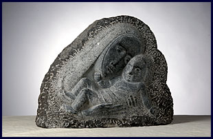
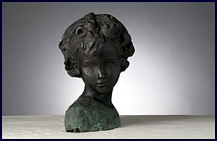
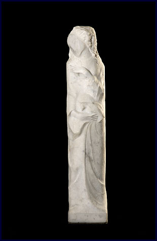
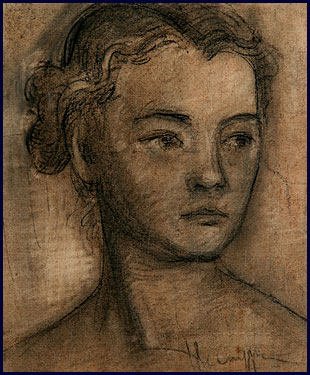

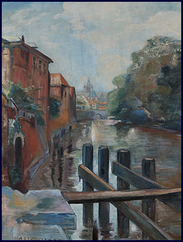
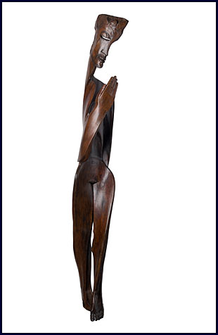
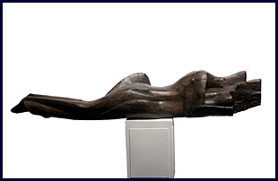
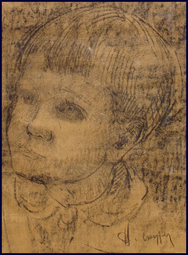
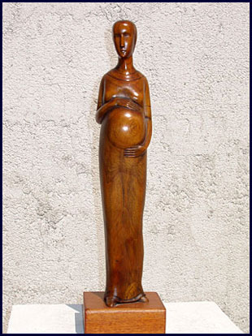
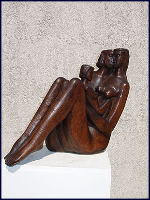
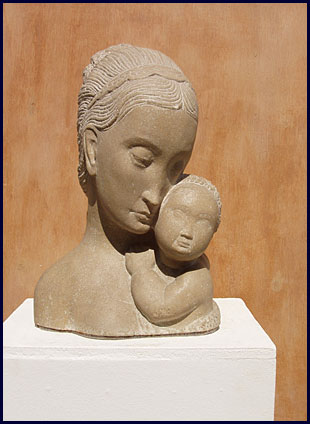
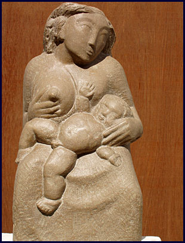
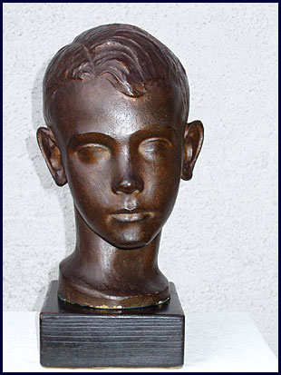
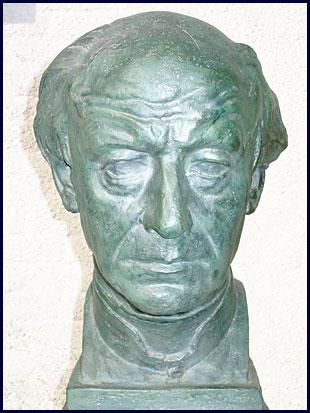
Religieus werk
Vanaf 1937 bereikte Herman De Cuyper, ook in zijn religieuze thematiek, de animistische fase. Bij wijze van voorbeeld bekijke men de schets in arduin voor het Madonna-retabel in de kapel van het Klein-Seminarie te Hoogstraten (1938) of O.-L.-Vrouw in verwachting, een cruciaal marmer uit 1937.
Profaan werk: moeder en kind
Bij de profane werken nemen de talrijke Moeder-en-kind uitbeeldingen het leeuwenaandeel voor zich op: het zijn tailles directes, meestal klein van formaat, waarbij het vooraanzicht domineert en steeds naar een op zich gesloten vormgeving wordt gestreefd.
Vaak hanteerde De Cuyper de da prima-techniek in hardsteen, waarbij gespeeld wordt met de tegenstelling tussen af en onaf als constitutief element van het uit-de-materie-bevrijde-beeld. Gepolijste vleespartijen steken af tegenover een geruwde achtergrond en het menselijke gelaat krijgt alle aandacht.
De intimistische uitbeeldingen van de grote levensmomenten — liefde, paring, zwangerschap, geboorte, moederschap, gezin en de wereld van het kind — worden door Herman De Cuyper plastisch uitgewerkt tot een metafysica van het menselijk gelaat. Hij schept sculpturen die de condition humaine vergeestelijken en op een hoger plan tillen. Profaan en religieus versmelten tot eenzelfde niveau.
De tekeningen, die de wanden sieren, zijn haast integraal gewijd aan de wereld van het kind. Deze portretten werden met eenvoudige middelen (potlood, houtskool, krijt en sanguine) voornamelijk getekend op wit papier.
Collectie online raadplegen
- IRPA / KIK
- Een selectie van de collectie is ook online raadpleegbaar via het Koninklijk Instituut voor het Kunstpatrimonium.
www.kikirpa.be
Volledige inventaris
De volledige doorzoekbare catalogus van 350+ beeldhouwwerken — met materiaal, datering, afmetingen en foto's — is beschikbaar in onze online inventaris. Zoek op titel, materiaal, kavel of nummer, en filter op privé, publiek of geschonken werken.